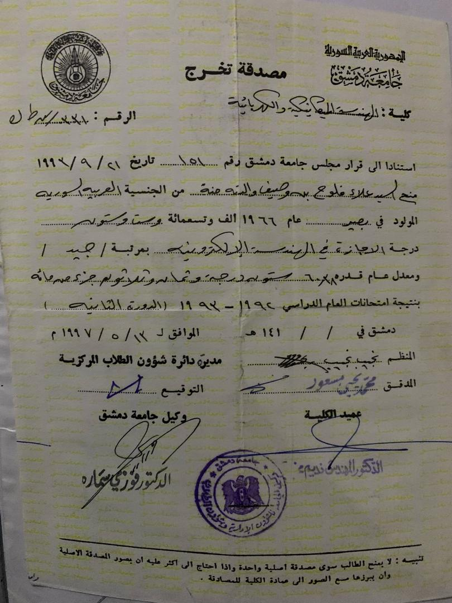
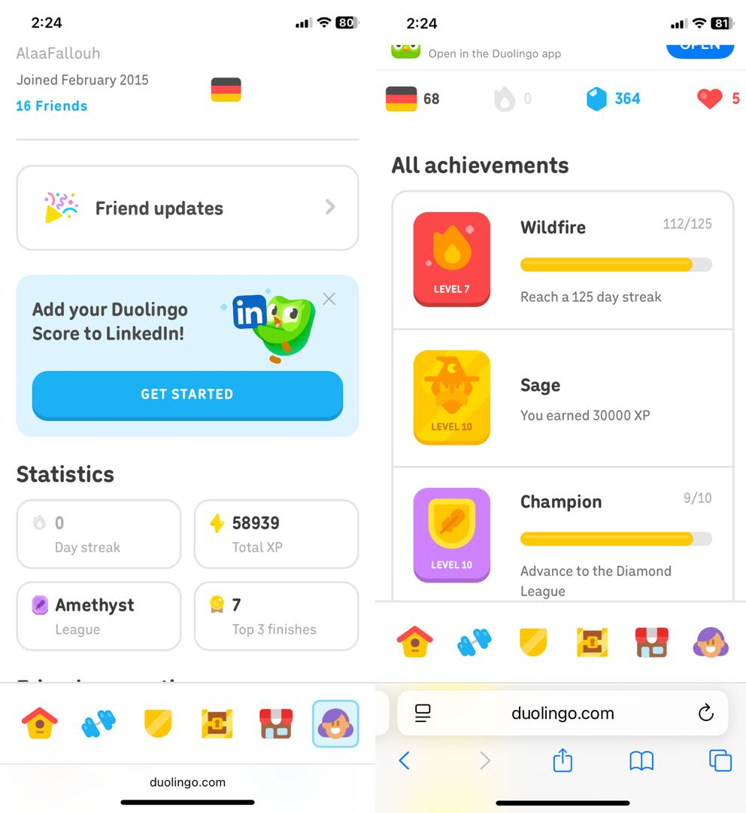
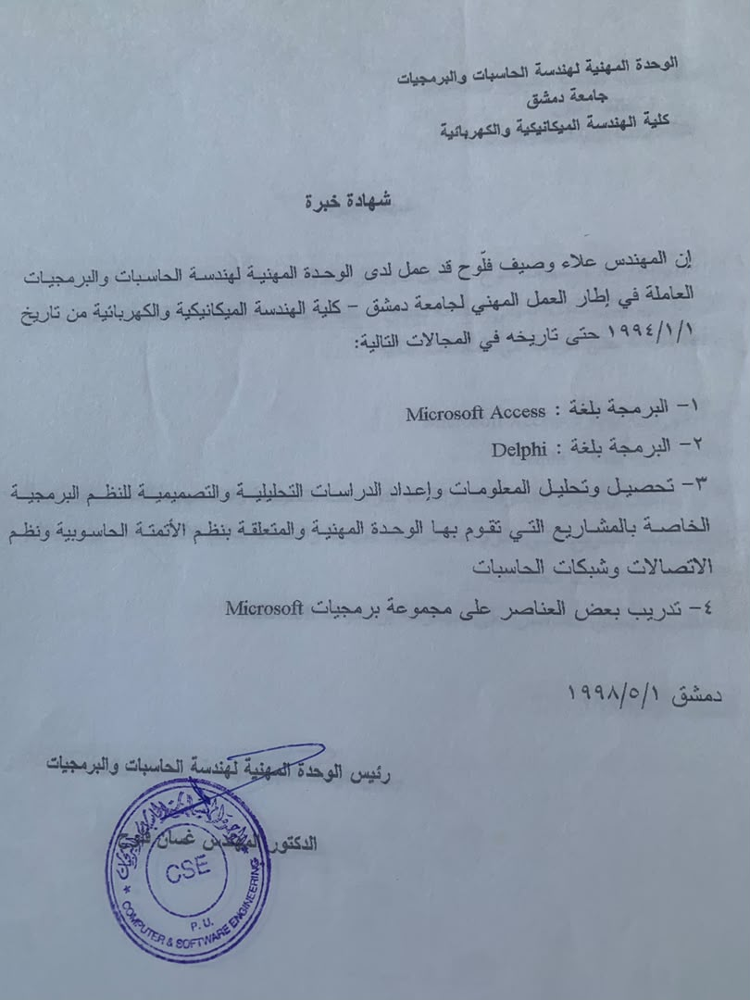
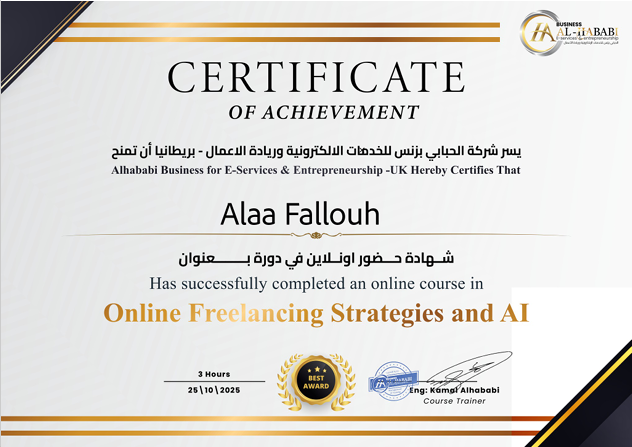
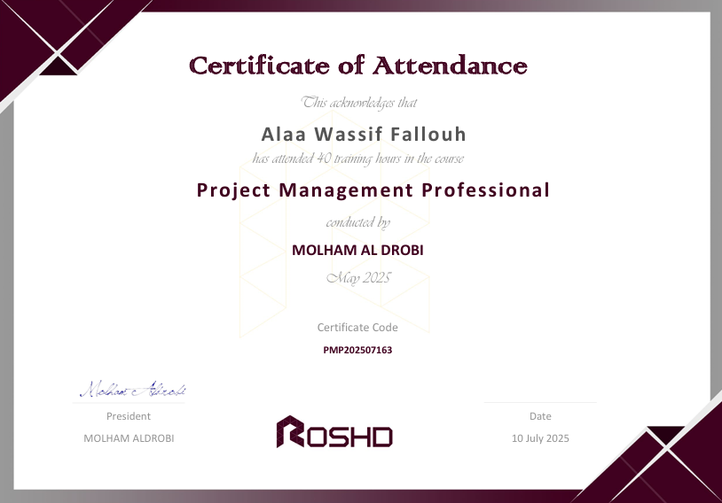
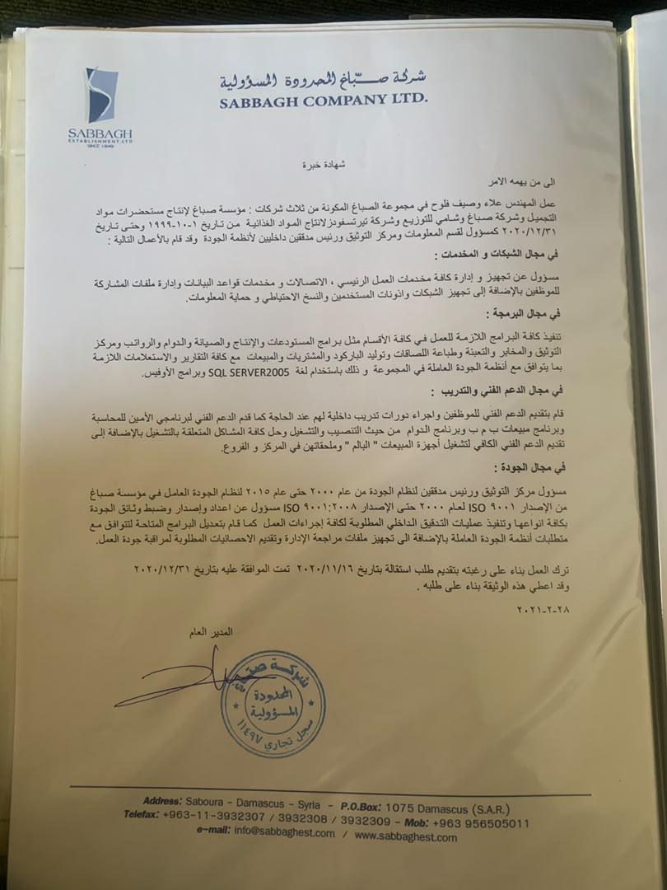
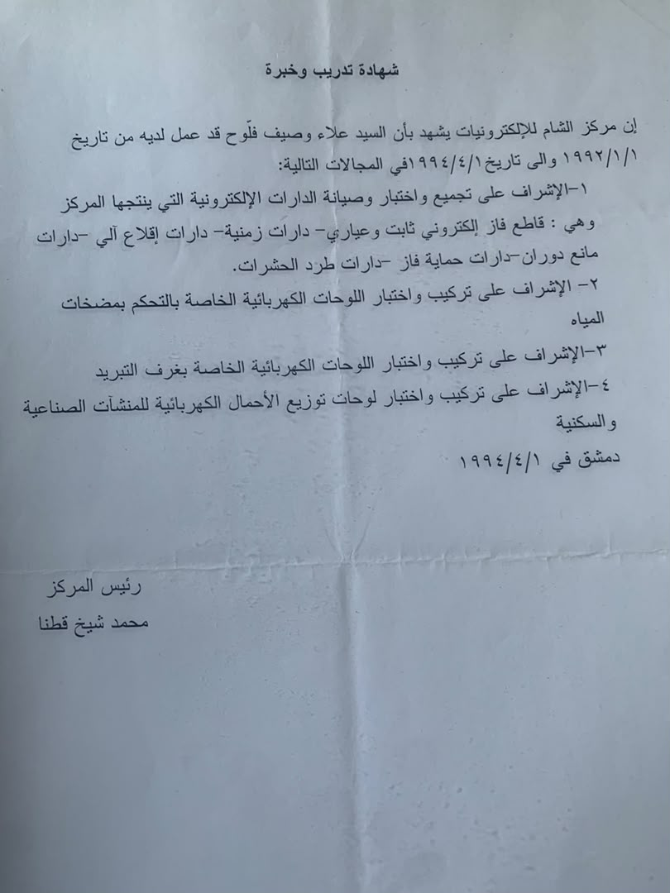

20+
سنة خبرة
45,000+
سطر SQL
87
برنامج أكسس
17
برنامج دلفي
13
ملف إكسل متقدم (Pivot + SQL)
1200
وثائق جودة
20
قالب وورد مؤتمت
150
موظف دعم فني
🏭 قطاع الانتاج والتوزيع
أنظمة متكاملة للمعامل الانتاجية وشركات التوزيع (معمل مستحضرات تجميل، توزيع، مواد غذائية، زهور) تشمل الإنتاج، المبيعات، المستودعات، الموارد البشرية، الجودة والصيانة.
🏗️
القسم الفني
فورمولات، مخابر، إنتاج، تعبئة مراقبة وضبط الجودة QC، QA
عرض التفاصيل
- إدارة الفورمولات والتراكيب.
- نظام المخابر والفحوصات.
- خطوط الإنتاج والتعبئة.
- ضبط الجودة (QC/QA) مع التوثيق الكامل.
- برنامج ادارة ومتابعة شكاوي الزبائن
- برنامج ادارة ومتابعة المرتجعات
- برنامج لانشاء وطباعة الباركودة للمواد
- برنامج ادارة مواصفات ومتطلبات مواقع العمل
- برامج متابعة صلاحية المواد وصلاحية الفحص
- برامج المعلومات الاحصائية للقسم الفني
- برامج تخطيط الانتاج ومتابعة خطة الانتاج
- برنامج احتساب متطلبات الانتاج لاي منتج مع مراقبة المتوفر في المستودعات والمطلوب شراءه
عودة
👥
الموارد البشرية
الذاتية، الرواتب، الأجور، الدوام
عرض التفاصيل
- نظام الموظفين وملفات الذاتية.
- إدارة الرواتب والأجور.
- نظام مراقبة الدوام والغياب والحضور
- تقارير إحصائية وتحليلية للموارد البشرية.
عودة
🏢
المبيعات والفروع (6 فروع)
مبيعات، مستودعات، محاسبة، شبكة معلومات
عرض التفاصيل
-
نظام مبيعات متكامل مع تقارير نوعية لـ 6 فروع.
برنامج BMB للتوزيع مع برنامج الامين للمحاسبة
تقارير مبيعات متطورة
-
برنامج البيع اليومي والتغطية
Daily Sales And Coverage
-
مجموعة تقارير محددات بارامترات البيع
SailesPoint Indicators SPI
-
تقارير التغطية
Coverage Repports
-
تقارير التوزيع
Distribution Repports
-
تقارير البيع حسب الزبائن
Sailes per customers
- تقارير تحليل المبيعات Hss
- تقارير تحليل المرتجعات Hrs
- تقارير خطوط السير Routs
- تقارير حالة الزبائن
- تقارير تحليل العروض
- برنامج تعديل الاسعار
- مستودعات مركزية ومحلية.
- محاسبة فرعية وإدارية.
- شبكة معلومات موحدة مع مخدمات بيانات واتصالات .
عودة
🔧
الصيانة
بطاقات الآلات، قطع الغيار، الصيانة الدوريةو الطارئة
عرض التفاصيل
- إدارة الآلات والمعدات.
- مخزون قطع الغيار.
- جدولة الصيانة الدورية والطارئة والتقارير.
- جدولة مواقع العمل والصيانات المتعلقة بها
- صبط الامن الصناعي
- خطط التفتيش والمراقبة
عودة
📦
برامج المستودعات
مخزون، حركات، جرد، تقارير تحليلية.
عرض التفاصيل
- نظام متكامل للمخزون والمواد يعمل وفق متطلبات نظام ادارة الجودة.
- نظام عمل حاويات لكل مادة مع مبدأFIFO
- امكانية تعريف المادة في اكثر من مستودع مع تفصيل حركاتها في كل مستودع
- تسجيل حركات الإدخال والإخراج والتحويلات.
- جرد دوري وتقارير تحليلية.
- حركات تسوية لتصحيح الاخطاء
- امكانيات الجرد حسب المادة او العائلة او الشركة او جرد عام
- برامج تخريج وجبات المواد من العملية الانتاجية حسب تركيب المنتج وكميته
- برامج طباعة لصاقات الاستلام والحجر ولصاقات الوزن
- طباعة وثائق المستودعات المطلوبة في نظام ادارة الجودة
عودة
📋 ادارة ضبط الجودة والتوثيق (15 سنة)
إنشاء وضبط كامل وثائق نظام إدارة الجودة، مع استمارات الضبط، برمجة أنظمة التوثيق، وإدارة التدقيق الداخلي ومركز التوثيق.
📄
إنشاء وضبط الوثائق
دليل الجودة، الإجراءات، التعليمات، السجلات.
عرض التفاصيل
- كتابة وتطوير كافة اجراءات وتعليمات العمل بحدود 30 اجراء و 200 تعليمة عمل ودليل للجودة ودليل اجراءات وتعليمات عمل .
- تحديث ومراجعة دورية وفق متطلبات النظام.
- توزيع ومراقبة الوثائق في جميع الأقسام.
- ترقية الوثائق فق متطلبات ترقية المواصفات
- اعتماد النماذج المعتمدة في كافة البرامج حيثما امكن
عودة
📊
استمارات الضبط
نماذج موحدة لتوثيق العمليات والبيانات.
عرض التفاصيل
- ترميز كافة الوثائق وفق متطلبات نظام الجودة
- تصميم كافة استمارات الضبط المطلوبة .
- أتمتة الاستمارات عبر البرامج المطورة.
- ربطها مع نظام التوثيق الإلكتروني.
عودة
💻
برامج الجودة
أنظمة تُنتج وثائق الجودة وتُسهل التدقيق.
عرض التفاصيل
- برنامج مركز التوثيق لإدارة الإجراءات والتعليمات والوثائق.
- برنامج لتوليد تقارير التدقيق الداخلي.
- نظام مركزي لتوثيق وحفظ جميع السجلات.
- برنامج لضبط النسخ الموزعة من كل وثيقة
- برنامج لادارة عمليات التدقيق الداخلي الخطة والتنفيذ
- برنامج لادارة الافعال التصحيحية والوقائية ومتابعتها
عودة
🔍
التدقيق الداخلي
إدارة عمليات التدقيق ومتابعة الإجراءات التصحيحية.
عرض التفاصيل
- تخطيط وتنفيذ خطط التدقيق السنوية.
- إعداد تقارير التدقيق ومتابعة الإجراءات التصحيحية.
- تقييم فعالية النظام واقتراح التحسينات.
عودة
🗂️
مركز التوثيق
إدارة وحفظ وتنظيم كامل وثائق الجودة والمراجع.
عرض التفاصيل
- تنظيم أرشيف إلكتروني وورقي للوثائق.
- تحديث قوائم الوثائق ومراقبة الإصدارات.
- توفير آليات بحث سهلة للرجوع إلى الوثائق.
عودة
🏛️ القطاع الحكومي
مشاريع تطوير وأتمتة لمؤسسات حكومية كبرى، شملت البرمجة والتحليل وإعداد الأنظمة.
🏭
الشركة الأهلية للمنتجات المطاطية
برمجة أنظمة لجميع الأقسام الإنتاجية والإدارية.
عرض التفاصيل
- تحليل احتياجات الأقسام وتصميم أنظمة مخصصة.
- برمجة الحوافز الانتاجية و أنظمة للإنتاج، المخازن، والصيانة و الذاتية والمبيعات.
- تدريب الموظفين على استخدام الأنظمة الجديدة.
عودة
📰
جريدة تشرين - فرز دليل الهاتف
تطوير برنامج لفرز وتنسيق دليل هاتف دمشق .
عرض التفاصيل
- بناء قاعدة بيانات متكاملة لفرز صفحات دليل الهاتف حسب الحروف الابجدية وحسب حجم الصفحة .
- تطوير واجهة بحث سريعة للاستخدام الداخلي.
عودة
🎓
جامعة دمشق - دراسة أتمتة
تحليل وتقييم أنظمة 6 مديريات في الجامعة.
عرض التفاصيل
- دراسة متطلبات الأتمتة لكل مديرية.
- تقديم توصيات لتحسين الأنظمة الحالية.
- إعداد خطة تنفيذية لتطبيق الأتمتة.
- وضع خطة فحص شامل لاجرائيات كل مديرية
عودة
📊
المؤسسة الهندسية
برنامج لإعداد ومتابعة الخطة الخمسية.
عرض التفاصيل
- تصميم قاعدة بيانات لتخزين بيانات الخطة الخمسية.
- اعداد برنامج ذاتية لمراقبة الدوام
- برنامج احتساب الحوافز الانتاجية
💼 القطاع الخاص
تطوير أنظمة معلومات متكاملة لمجالات حيوية: الرعاية الصحية، الخدمات اللوجستية، وإدارة المعرفة.
🩺
برامج الأطباء
ذاتية مرضى ، مواعيد، ملفات مرضى، وصفات، تقارير طبية.
عرض التفاصيل
- نظام طبيب نسائية : ذاتية مرضى مع سجل زيارات لسبع حالات مختلفة مع الاستعلامات والتقاير الملائمة.
- ملفات إلكترونية للمرضى (تاريخ طبي، وصفات، نتائج).
- تقارير إحصائية وتحليلية للأداء.
برنامج طبيب اسنان مع خريطة للاسنان وذاتية مرضى ومحاسبة
عودة
🧪
برامج المخابر
برامج مخبر تحاليل طبية
عرض التفاصيل
- برنامج مختبر تحليل مخبر لينا للتحاليل الطبية ومخبر الرها
- تعريف اي تحليل جديد مع قيمه الاسمية
- إدخال نتائج الفحوصات وإصدار التقارير.
- العمل باربع لغات مع لغة جديدة ممكن تعريفها في البرنامج
- أرشفة النتائج والبحث عنها.
عودة
🚢
برامج الشحن البحري
تتبع شحنات، حاويات، جداول رحلات، فواتير.
عرض التفاصيل
- برنامج لسحب البوالص من ملف اكسل او ملف نص الى قاعدة بيانات مع كشف الاخطاء يشمل الشحنات والحاويات.
- اصدار كافة التقارير التي تتطلبها ادارة العملية.
- احتساب تكاليف الشحن وتقارير الأداء.
- تجهيز ملف لادارة الجمارك حول الشحنات الواردة
عودة
📚
برامج المكتبات
برنامج مكتبة كتب و برنامج مكتبة موسيقى
فهرسة، إعارة، بحث، تقارير إحصائية.
عرض التفاصيل
- برنامج مكتبة يشمل فهرسة دولية الكتب والمواد (تصنيف، مؤلف، سنة نشر).
- نظام إعارة وإرجاع الكتب.
- بحث متقدم وتقارير إحصائية.
برنامج مكتبة موسيقى واغاني
- ادخال محتويات كاسيت او سيدي
- البحث عن اغنية محددة او مطرب تجهيز غلاف للسيدي او الكاسيت حسب الاغاني المختارة
عودة
🛠️ المهارات والادوات
اللغات والأدوات التي أتقنها مع مستوى الخبرة:
Java Secript Primary Level 90%
🏅 الشهادات والدورات
📜
اجازة في الهندسة الكهربائية اختصاص الكترون جامعة دمش
عرض التفاصيل
هندسة كهرباء اختصاص الكترون جامعة دمشق خريج عام 1993 بمعدل جيد

عودة
📜
دورات في نظام ادارة الجودة ISO 9001
قمت بتنفيذ عدة دورات في مجال نظام ادارة الجودة منها
-
دورت التدقيق الداخلي
عرض التفاصيل
📜
دورات لغات ولغات برمجة
قمت بتنفيذ عدة دورات منها
لغة انكليزية
عرض التفاصيل
دورة لغة انكليزية في مركز فخر الشام لمدة تسعة اشهرB4
 عودة
عودة
لغة المانية
عرض التفاصيل
كورس لغة المانية من الانكليزية DuoLingo level68

عودة
البرمجة بلغة دلفي و الاكسس المتقدم
عرض التفاصيل
دورة لمدة ثلاثة اشهر حول البرمجة بلغة دلفي ودورة لمدة شهر برمجة اكسس متقدم في الوحدة المهنية لهندسة المعلومات والحاسبات

عودة
دورة اوراكل 6 اشهر مركز شام
عرض التفاصيل
دورة تشمل ادارة وتصميم وضيانة قواعد البيانات والمطور مركز شام المزة
عودة
دورة mcse مركز شام
عرض التفاصيل
دورة مهندس نظام مايكرو سوفت MCSEمركز شام المزة
 عودة
عودة
📜
دورات اون لاين
قمت بتنفيذ عدة دورات منها
دورة اساسيات العمل الحر
عرض التفاصيل
دورة اساسيات العمل الحر

عودة
كورس لغة المانية من الانكليزية DuoLingo level68
عرض التفاصيل
كورس لغة المانية من الانكليزية DuoLingo level68
عودة
إدارة المشاريع الاحترافية PMP
عرض التفاصيل
دورة في إدارة المشاريع اكاديمية رشد.
عرض التفاصيل
دورة حول كيفية ادارة المشاريع ووضع الجدول الزمني لتنفيذ المشاريع مع دراسة التكاليف

عودة
كورس تطوير الويب مستوى اول Front End
عرض التفاصيل
عرض التفاصيل
دبلوم تطوير الويب مستوى اول HTML & CSS تقديم اكاديمية كلاود سوفت
 عودة
عودة
📜
شهادات خبرة
تحليل واتمتة النظم
عرض التفاصيل
اربع سنوات في تحليل واتمتة النظم في الوحدة المهنية لهندسة المعلومات والحاسبات
عودة
شهادة خبرة من مجموعة الصباغ عشرين سنة مسؤول قسم المعلومات

عودة
انتاج وصيانة الدارات الالكترونية ولوحات التحكم الصناعي

عودة